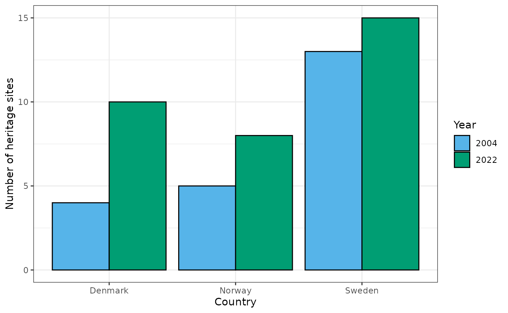

tuesdata <- tt_load('2024-02-06')
#>
#> Downloading file 1 of 1: `heritage.csv`
dat <- tuesdata$heritageThis was taken directly from the README file in the official tidytuesday site.
dim(dat)
#> [1] 3 3
glimpse(dat)
#> Rows: 3
#> Columns: 3
#> $ country <chr> "Norway", "Denmark", "Sweden"
#> $ `2004` <dbl> 5, 4, 13
#> $ `2022` <dbl> 8, 10, 15
knitr::kable(dat)| country | 2004 | 2022 |
|---|---|---|
| Norway | 5 | 8 |
| Denmark | 4 | 10 |
| Sweden | 13 | 15 |
tidyDat <- dat |>
pivot_longer(names_to = "year", values_to = "n", cols = 2:last_col())
knitr::kable(tidyDat)| country | year | n |
|---|---|---|
| Norway | 2004 | 5 |
| Norway | 2022 | 8 |
| Denmark | 2004 | 4 |
| Denmark | 2022 | 10 |
| Sweden | 2004 | 13 |
| Sweden | 2022 | 15 |
set.seed(3)
(
p1 <- tidyDat |>
ggplot(aes(country, n)) +
geom_col(aes(fill = year), color = "black", position = "dodge") +
labs(
x = "Country", y = "Number of heritage sites"
) +
scale_fill_manual(
name = "Year",
values = unname(palette.colors())[c(3, 4)]
) +
theme_bw()
)
sessioninfo::session_info()
#> ─ Session info ───────────────────────────────────────────────────────────────
#> setting value
#> version R version 4.4.0 (2024-04-24)
#> os Ubuntu 22.04.4 LTS
#> system x86_64, linux-gnu
#> ui X11
#> language en
#> collate C.UTF-8
#> ctype C.UTF-8
#> tz UTC
#> date 2024-05-08
#> pandoc 3.1.11 @ /opt/hostedtoolcache/pandoc/3.1.11/x64/ (via rmarkdown)
#>
#> ─ Packages ───────────────────────────────────────────────────────────────────
#> package * version date (UTC) lib source
#> bit 4.0.5 2022-11-15 [1] RSPM
#> bit64 4.0.5 2020-08-30 [1] RSPM
#> bslib 0.7.0 2024-03-29 [1] RSPM
#> cachem 1.0.8 2023-05-01 [1] RSPM
#> cellranger 1.1.0 2016-07-27 [1] RSPM
#> cli 3.6.2 2023-12-11 [1] RSPM
#> colorspace 2.1-0 2023-01-23 [1] RSPM
#> crayon 1.5.2 2022-09-29 [1] RSPM
#> curl 5.2.1 2024-03-01 [1] RSPM
#> desc 1.4.3 2023-12-10 [1] RSPM
#> digest 0.6.35 2024-03-11 [1] RSPM
#> dplyr * 1.1.4 2023-11-17 [1] RSPM
#> evaluate 0.23 2023-11-01 [1] RSPM
#> fansi 1.0.6 2023-12-08 [1] RSPM
#> farver 2.1.1 2022-07-06 [1] RSPM
#> fastmap 1.1.1 2023-02-24 [1] RSPM
#> fs 1.6.4 2024-04-25 [1] RSPM
#> generics 0.1.3 2022-07-05 [1] RSPM
#> ggplot2 * 3.5.1 2024-04-23 [1] RSPM
#> glue 1.7.0 2024-01-09 [1] RSPM
#> gtable 0.3.5 2024-04-22 [1] RSPM
#> highr 0.10 2022-12-22 [1] RSPM
#> hms 1.1.3 2023-03-21 [1] RSPM
#> htmltools 0.5.8.1 2024-04-04 [1] RSPM
#> httr 1.4.7 2023-08-15 [1] RSPM
#> jquerylib 0.1.4 2021-04-26 [1] RSPM
#> jsonlite 1.8.8 2023-12-04 [1] RSPM
#> knitr 1.46 2024-04-06 [1] RSPM
#> labeling 0.4.3 2023-08-29 [1] RSPM
#> lifecycle 1.0.4 2023-11-07 [1] RSPM
#> lubridate 1.9.3 2023-09-27 [1] RSPM
#> magrittr 2.0.3 2022-03-30 [1] RSPM
#> memoise 2.0.1 2021-11-26 [1] RSPM
#> munsell 0.5.1 2024-04-01 [1] RSPM
#> pillar 1.9.0 2023-03-22 [1] RSPM
#> pkgconfig 2.0.3 2019-09-22 [1] RSPM
#> pkgdown 2.0.9 2024-04-18 [1] any (@2.0.9)
#> purrr 1.0.2 2023-08-10 [1] RSPM
#> R6 2.5.1 2021-08-19 [1] RSPM
#> ragg 1.3.1 2024-05-06 [1] RSPM
#> readr 2.1.5 2024-01-10 [1] RSPM
#> readxl 1.4.3 2023-07-06 [1] RSPM
#> rlang 1.1.3 2024-01-10 [1] RSPM
#> rmarkdown 2.26 2024-03-05 [1] RSPM
#> rstudioapi 0.16.0 2024-03-24 [1] RSPM
#> rvest 1.0.4 2024-02-12 [1] RSPM
#> sass 0.4.9 2024-03-15 [1] RSPM
#> scales 1.3.0 2023-11-28 [1] RSPM
#> selectr 0.4-2 2019-11-20 [1] RSPM
#> sessioninfo 1.2.2 2021-12-06 [1] RSPM
#> stringi 1.8.4 2024-05-06 [1] RSPM
#> stringr 1.5.1 2023-11-14 [1] RSPM
#> systemfonts 1.0.6 2024-03-07 [1] RSPM
#> textshaping 0.3.7 2023-10-09 [1] RSPM
#> tibble 3.2.1 2023-03-20 [1] RSPM
#> tidyr * 1.3.1 2024-01-24 [1] RSPM
#> tidyselect 1.2.1 2024-03-11 [1] RSPM
#> tidytuesdayR * 1.0.3 2023-12-13 [1] RSPM
#> timechange 0.3.0 2024-01-18 [1] RSPM
#> tzdb 0.4.0 2023-05-12 [1] RSPM
#> usethis 2.2.3 2024-02-19 [1] RSPM
#> utf8 1.2.4 2023-10-22 [1] RSPM
#> vctrs 0.6.5 2023-12-01 [1] RSPM
#> vroom 1.6.5 2023-12-05 [1] RSPM
#> withr 3.0.0 2024-01-16 [1] RSPM
#> xfun 0.43 2024-03-25 [1] RSPM
#> xml2 1.3.6 2023-12-04 [1] RSPM
#> yaml 2.3.8 2023-12-11 [1] RSPM
#>
#> [1] /home/runner/work/_temp/Library
#> [2] /opt/R/4.4.0/lib/R/site-library
#> [3] /opt/R/4.4.0/lib/R/library
#>
#> ──────────────────────────────────────────────────────────────────────────────